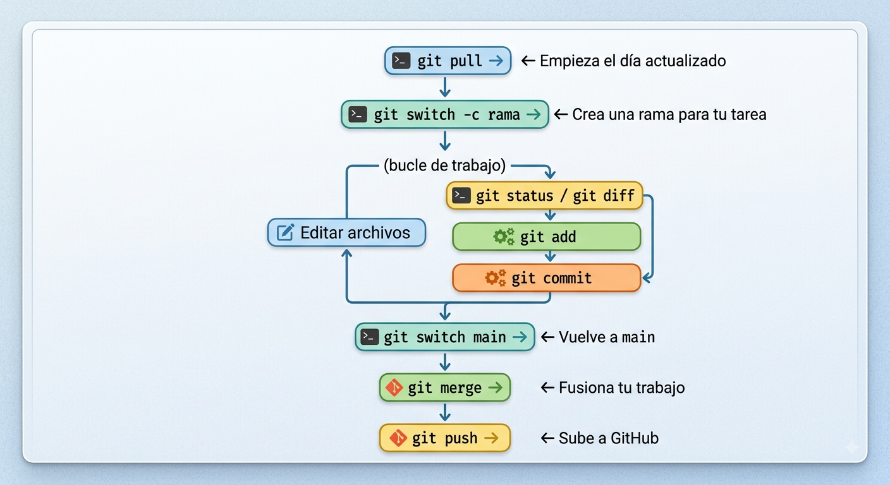

En esta actividad aprenderéis el flujo básico de trabajo con Git y GitHub: clonar un repositorio, crear y usar ramas, guardar cambios con commits y sincronizar correctamente vuestro trabajo entre el entorno local y el repositorio remoto.
Herramientas:
Vamos a hacer una primera aproximación al concepto de Organización, Equipo y Repositorio en GitHub. Para ello vamos a realizar primero una actividad individual que permita a todos los alumnos pasar por todos los pasos y luego los volveremos a repetir por equipos para que tenga más sentido.
¿Qué es una organización en GitHub?
Una organización en GitHub es un espacio compartido donde un equipo o empresa puede gestionar múltiples repositorios juntos. A diferencia de un usuario personal, una organización puede tener varios propietarios y miembros con distintos niveles de acceso.
Las organizaciones incluyen funcionalidades adicionales como equipos (teams), gestión de permisos por repositorio, y en los planes de pago, herramientas de seguridad avanzadas.
¿Cuándo usar usuario personal u organización?
| Situación | Recomendación |
|---|---|
| Proyecto personal, portfolio, aprendizaje | Usuario personal |
| Proyecto de empresa o startup | Organización |
| Proyecto open source con varios colaboradores | Organización |
| Trabajo freelance en solitario | Usuario personal |
| Equipo de desarrollo (2 o más personas) | Organización |
Info
si trabajas solo o en proyectos personales, el usuario personal es suficiente. En cuanto haya un equipo, una empresa o varios proyectos relacionados, una organización facilita mucho la gestión.
Cada miembro del equipo debe tener su propia cuenta de GitHub.
La organización en GitHub servirá como el contenedor de vuestro proyecto de equipo cuando comencemos con el proyecto, ahora se trata de que todos adquiráis los conocimientos necesarios para realizar estas acciones, por lo que:
+ en la esquina superior derecha de GitHub y seleccionad "New organization".[apellido1_nombre]_pi2damiesbalmis. Por ejemplo: garcia_sonia_pi2damiesbalmis.Ahora, el propietario de la organización debe invitar al menos a tres compañeros y al profesor.
Los equipos ayudan a gestionar los permisos de acceso a los repositorios.
Nota
Crear un equipo es algo opcional en este caso, pero es una buena práctica para gestionar permisos en proyectos más grandes.
pruebasEn este punto vamos a clonar el repositorio de GitHub a una carpeta local de nuestro ordenador. Crearemos una nueva rama a parte de la main para acostumbrarnos a realizar el trabajo de forma organizada.
git clone crea una copia completa de un repositorio remoto en tu máquina, incluyendo todo el historial.
# Clonar un repositorio de GitHub git clone https://github.com/usuario/repositorio.git # Clonar en una carpeta con un nombre diferente git clone https://github.com/usuario/repositorio.git mi-carpeta # Clonar solo la rama principal (más rápido en repos muy grandes) git clone --single-branch https://github.com/usuario/repositorio.git # Clonar y entrar en la carpeta git clone https://github.com/usuario/repositorio.git cd repositorio
Info
Al clonar, Git configura automáticamente origin apuntando al repositorio de GitHub.
En Visual Code abriremos la carpeta donde vayamos a situar la carpeta de nuestro repositorio.
Clonar el repositorio:
En la página del repositorio pruebas en GitHub, haced clic en el botón verde [<> Code].
Copiad la URL HTTPS (por ejemplo: https://github.com/nombre-organizacion/pruebas.git).
En la terminal bash de VSCode, ejecutar:
git clone [URL_COPIADA_DEL_REPOSITORIO]
Abrir en Vs Code la nueva carpeta creada. O situarte en ella en la terminal con:
cd pruebas
Las ramas (branches) son una de las características más poderosas de Git. Permiten trabajar en nuevas funcionalidades, correcciones o experimentos de forma completamente aislada del código principal, y fusionarlos cuando estén listos. En un repositorio de un equipo cada persona debe trabajar en su propia rama para no interferir con el trabajo de los demás. Una rama es como una línea temporal independiente del proyecto.
git branch Gestionar ramas
# Ver todas las ramas locales git branch # Ver todas las ramas (locales y remotas) git branch -a # Crear una nueva rama (sin cambiarte a ella) git branch nombre-rama # Eliminar una rama (solo si ya fue fusionada) git branch -d nombre-rama # Eliminar una rama forzosamente (aunque no haya sido fusionada) git branch -D nombre-rama # Renombrar la rama actual git branch -m nuevo-nombre # Ver la última actividad de cada rama git branch -v
git switch Cambiar de rama (comando moderno)
git switch es el comando moderno para cambiar entre ramas (disponible desde Git 2.23).
# Cambiar a una rama existente git switch nombre-rama # Crear una nueva rama y cambiarte a ella en un solo paso git switch -c nueva-funcionalidad # Volver a la rama anterior git switch -
git checkout Cambiar de rama (comando clásico)
git checkout es el comando clásico. Funciona igual que git switch pero también tiene otros usos (como restaurar archivos).
# Cambiar a una rama existente git checkout nombre-rama # Crear una nueva rama y cambiarte a ella git checkout -b nueva-funcionalidad # Volver a la rama anterior git checkout -
Info
switch vs checkout: ambos funcionan igual para cambiar de rama. switch es más moderno y claro en su propósito. En proyectos actuales se recomienda switch, pero encontrarás checkout en mucha documentación y tutoriales.
Crear una nueva rama: Reemplazad [tu-nombre] por vuestro nombre en minúsculas.
git branch [tu-nombre]
Moverse a la nueva rama:
git switch [tu-nombre]
Nota
Acabáis de crear una "copia" del estado actual de la rama main y os habéis movido a ella para empezar a trabajar. Todos vuestros cambios a partir de ahora se harán en esta nueva rama.
Ahora, añadiremos un fichero al proyecto
Crear un fichero Markdown: Usad el Bloc de notas o vuestro editor preferido para crear un fichero con vuestro nombre. Por ejemplo, juan.md.
notepad juan.md
Añadir contenido al fichero. Podéis usar sintaxis Markdown, por ejemplo:
# Fichero de Juan
* Me gusta el desarrollo de software.
* Mi lenguaje favorito es Python.
Guardar y cerrad el fichero.
Añadir el fichero al "staging area": Le indicamos a Git que queremos incluir este fichero en nuestro próximo "guardado" (commit).
git add juan.md
Hacer commit: Guardamos los cambios de forma permanente en el historial de nuestra rama.
git commit -m "Añade fichero de Juan"
Vuestros cambios (la nueva rama y el nuevo fichero) solo existen en vuestro ordenador. Ahora los subiréis a GitHub.
git push — Subir cambios al remoto
git push envía los commits de tu repositorio local al repositorio remoto.
git push --set-upstream origin [tu-nombre]
Nota
El comando --set-upstream origin [tu-nombre] crea un enlace entre tu rama local y una nueva rama con el mismo nombre en el repositorio remoto (GitHub), para que en futuros push solo necesites escribir git push.
# Subir la rama actual al remoto (primera vez, con -u para configurar el seguimiento) git push -u origin main # Subir la rama actual (después de haber configurado el seguimiento con -u) git push # Subir una rama específica git push origin nombre-rama # Subir todas las ramas locales git push --all origin
Warning
Importante: solo puedes hacer push si no hay cambios en el remoto que tú no tengas. Si alguien más ha subido algo, primero debes hacer git pull.
Crea un nuevo fichero llamado saludo.md en tu rama personal, añade un saludo gracioso, súbelo a GitHub y luego integra esos cambios en main para que queden iguales en local y en remoto.
Asegúrate de estar en tu rama personal:
git switch [tu-nombre]
Crea el fichero saludo.md con un saludo gracioso:
notepad saludo.md
Escribe algo como este ejemplo y guarda:
# Saludo del equipo
Hola profe. Si este commit falla, echadle la culpa al teclado, no al programador.
Añade, confirma y sube los cambios de tu rama:
git add saludo.md git commit -m "Añade saludo gracioso en saludo.md" git push origin [tu-nombre]
Cámbiate a main y actualizala con lo último del remoto:
git switch main git pull origin main
Comprueba qué hay en main antes de integrar tu rama:
Nota
Si los cambios anteriores no existen en main, es normal: todavía no has integrado tu rama personal.
Integra tu rama personal en main y sube main a remoto:
git merge — Fusionar ramas
git merge integra los cambios de una rama en otra. Debes estar en la rama de destino antes de ejecutarlo.
# Primero, cámbiate a la rama que recibirá los cambios git switch main # Fusiona la rama de la funcionalidad en main git merge rama-personal # Fusionar sin crear un commit de merge (si es posible) git merge --ff-only rama-personal # Fusionar creando siempre un commit de merge (mantiene el historial) git merge --no-ff rama-personal
Integra tu rama a main, añadiendo los nuevos cambios
git merge [tu-nombre] git push origin main
Comprueba que saludo.md ya existe en main y tiene el mismo contenido
Verifica que no tienes cambios pendientes en local:
git status
Sincroniza referencias y compara main local con origin/main:
git fetch origin git diff main origin/main
Importante
Si git diff main origin/main no muestra nada, significa que main está igual en local y en remoto.
Comprueba en GitHub web que en la rama main aparece el fichero saludo.md con el contenido que has creado.
Warning
Si trabajas tú solo en el repositorio, puedes usar ramas para organizar tareas concretas y eliminarlas cuando ya estén integradas en main. En ese escenario, la integración suele ser sencilla y sin conflictos.
git branch funcionalidad-carrito git branch funcionalidad-busqueda # Verifica que se crearon git branch
# Trabaja en la rama del carrito
git switch funcionalidad-carrito
echo "<div id='carrito'>0 artículos</div>" >> index.html
git add index.html
git commit -m "Añade icono del carrito de compras"
# Cambia a la rama de búsqueda y añade otro cambio independiente
git switch funcionalidad-busqueda
echo "# Mejora de búsqueda" > busqueda.md
echo "Añadir campo de búsqueda en la cabecera" >> busqueda.md
git add busqueda.md
git commit -m "Añade propuesta inicial para funcionalidad de búsqueda"
# Vuelve a main y trabaja en otra cosa sin interferir
git switch main
echo "/* Nuevos colores corporativos */" >> css/styles.css
git add css/styles.css
git commit -m "Actualiza paleta de colores corporativos"
# Verifica que main no tiene los cambios del carrito
cat index.html # El div del carrito no aparece aquí
# Asegúrate de estar en main git switch main # Fusiona la rama del carrito git merge funcionalidad-carrito # Verifica que los cambios del carrito están ahora en main cat index.html # Ahora sí aparece el div del carrito # El historial muestra ambas líneas de desarrollo git log --oneline --graph # Elimina la rama ya fusionada porque se ha terminado el trabajo en ella git branch -d funcionalidad-carrito
Info
En la siguiente actividad simularemos un caso más real, con varias personas trabajando a la vez sobre el mismo repositorio, donde sí pueden aparecer conflictos y errores de sincronización.
| Comando | Descripción en esta actividad |
|---|---|
git config --global user.name |
Configura tu nombre de autor para todos tus repositorios. |
git config --global user.email |
Configura tu email de autor para todos tus repositorios. |
git clone [url] |
Crea una copia local de un repositorio remoto de GitHub. |
git branch [nombre-rama] |
Crea una nueva rama. |
git switch [nombre-rama] |
Cambia a la rama indicada para trabajar en ella. |
git checkout [nombre-rama] |
Se mueve a la rama especificada para empezar a trabajar en ella. |
git add [fichero] |
Añade un fichero modificado al "área de preparación" (staging) para incluirlo en el próximo commit. |
git commit -m "mensaje" |
Guarda una instantánea de los cambios preparados en el historial local de la rama. |
git push origin [nombre-rama] |
Sube los commits de tu rama local a la rama correspondiente en GitHub (remoto origin). |
git pull origin [nombre-rama] |
Descarga los cambios de una rama remota y los fusiona en tu rama local actual. |
git fetch origin |
Actualiza las referencias remotas sin fusionarlas automáticamente en tu rama local. |
git diff main origin/main |
Compara la rama main local con origin/main para verificar si están iguales. |
git status |
Muestra si hay cambios pendientes o si el repositorio está limpio. |
git merge [nombre-rama] |
Fusiona el historial de la rama especificada en la rama actual. |
Este es el flujo de trabajo que se recomienda seguir en el trabajo diario con Git y GitHub:
git pull # 1. Descarga los cambios del equipo git status # 2. Confirma que todo está limpio git switch -c tarea/descripcion # 3. Crea una rama para la nueva tarea
# Trabaja en tu código... git status # Revisa qué ha cambiado git diff # Revisa los detalles del cambio git add . # Prepara los cambios git commit -m "Descripción clara" # Guarda el punto de control # Repite: trabaja → status → add → commit
git switch main # Vuelve a la rama principal git pull # Descarga posibles cambios nuevos git merge tarea/descripcion # Fusiona tu trabajo git push # Sube al repositorio remoto git branch -d tarea/descripcion # Limpia la rama ya fusionada

Regla de oro: haz pull antes de empezar y push al terminar. Haz commits pequeños y frecuentes. Usa ramas para todo lo que no sea un cambio trivial.